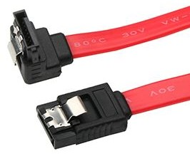
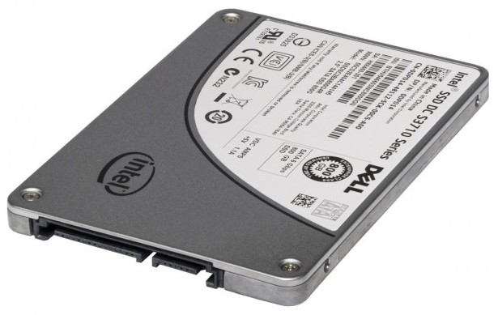
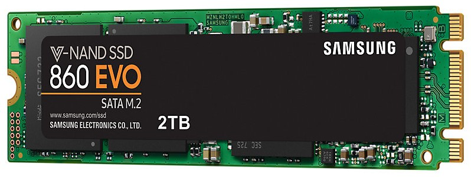
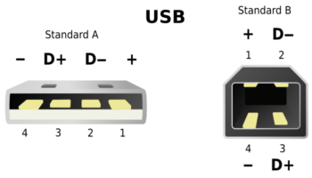
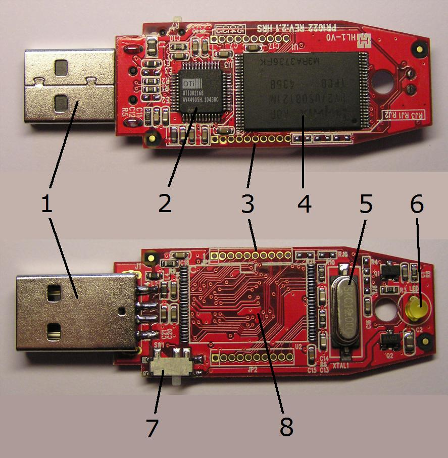
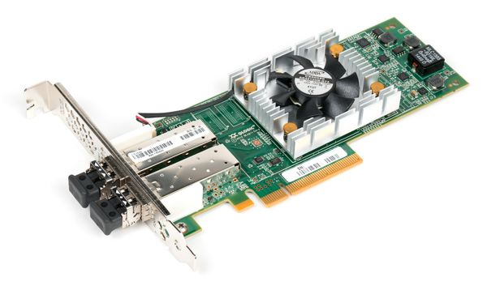

Storage
SATA interface
SATA (Serial ATA) is an interface for connecting HDDs, SSDs, and optical drives to computers. SATA replaced the old parallel ATA interface (PATA, aka IDE). Max transfer speed of PATA was 133 MB/s. Some abbreviations:
- HDD - Hard Disk Drive,
- SSD - Solid State Drive,
- IDE - Integrated Drive Electronics,
- PATA - Parallel Advanced Technology Attachment,
- SATA - Serial Advanced Technology Attachment,
- SAS - Serial Attached SCSI,
- SCSI - Small Computer System Interface; it's older then PATA but still used by servers (as SAS),
- NVMe - NVM Express, Non-Volatile Memory Host Controller Interface;
SATA cables can be as long as 1m (3.3ft), each SATA drive requires a separate cable, because it's one drive per channel technology, and they are hot-pluggable.
| Name | Rev | Speed | Speed | NCQ | Notes |
|---|---|---|---|---|---|
| Serial ATA-150 | 1.0 | 1.5 Gbit/s | 150 MB/s | - | 2003 |
| Serial ATA-300 | 2.0 | 3 Gbit/s | 300 MB/s | + | 2004 |
| Serial ATA-600 | 3.0 | 6 Gbit/s | 600 MB/s | + | 2009 |
| Serial ATA-600 | 3.2 | 16 Gbit/s | 1969 MB/s | + | 2013 |
NCQ (Native Command Queuing) increases HDD performance by reordering the commands send by computer. Some SSDs also use NCQ, but in a different manner: SSD has no need to compensate latency caused by magnetic heads movement, so reordering has no sense, but queuing can be usefull.
Currently, SATA has a number of misc connectors and form factors like Micro SATA (aka uSATA or μSATA) for 1.8-inch drives, eSATA for external connectivity (it uses a more robust connector, shielded cables up to 2m, etc), M.2 for computer expansion cards and associated connectors.
SAS (Serial Attached SCSI) uses the same physical interconnects as SATA, and most SAS HBAs (Host Bus Adapter) also support 3 and 6 Gbit/s SATA devices.
SSD (Solid State Drive)
SSD form-factors
SATA, M.2, PCI Express card
Strictly speaking, SATA is an interface specification. But when SSDs became popular, SATA became a SSD's form-factor. So, now any SSD in 2.5" case with standard SATA connectors is a SATA SSD:
Since SATA (as interface) has speed limits, the next logical step was to connect SSDs directly to the PCI bus. As a result we got NVMe, Non-Volatile Memory Express and two additional form factors: NVMe on a standard PCI Express card (like graphics card) and NVMe on a small card (22x100mm, 22x80mm, 22x60mm, ...) inserted into a new M.2 slot on computer's motherboard.
It's obvious that SATA and PCIe form-factors are too big for SSD, and PCIe slots on the motherboard are "precious", especially for extreme gamers using two graphics cards. So, NVMe M.2 is probably the winner in the near future.
Note that M.2 (in the past it was called NGFF, new generation form-factor) can support several interfaces, including SATA (same speed limit as for SATA SSD), PCIe (faster then SATA and does not occupy PCIe slot), NVMe (probably the best of all).
The most popular SSDs in 2020 seems to be NVMe SSD Type 2280 (80mm) cards connected to M.2 socket on the motherboard. Of course, you can only use these SSDs if your motherboard has M.2 socket. Otherwise you need SATA SSD.
SSD speeds
Non-Volatile Memory Express is an open standard developed to allow modern SSDs to operate at the read/write speeds their flash memory is capable of. So, let's compare.
An average read/write speed of a typical 7200rpm SATA HDD is ~100 MB/s (megabytes per sec). SATA SSDs provide ~530/500 MB/s. Read is faster than write, and the difference can be essential. NVMe SSDs are absolute champions with read/write speeds up to 3500/3200 MB/s. That is, roughly 6x faster than SATA SSDs and 30x faster than HDDs.
Of course, the above numbers are just some average estimates. In fact, some users complain that they have not noticed big difference after replacing SATA SSD with NVMe. On the other hand, the difference between SSD and HDD is very noticeable.
Ajusting your system to Solid State Drive
Typical SSD root filesystem in /etc/fstab:
UUID=f0a...5d / ext4 noatime,errors=remount-ro 0 1
However, this should not be used for swap and efi partitions, if they exist.
Note!
When I installed Ubuntu 18.04 on 256 Gb SSD, the default installation procedure created 512 Mb efi partition and the rest went to ext4 partition (root, home, and everything). And no swap partition - a swap file instead.
When I installed Ubuntu 19.04 on 128 Gb SSD, the default installation procedure created only one ext4, i.e., all-in-one, no efi, no swap, just /boot dir and /swapfile (~2GB) .
About tmpfs
I prefer to use tmpfs (i.e., RAM) for temp files, logs and spools:
none /tmp tmpfs defaults,noatime,mode=1777,size=10% 0 0 tmpfs /var/spool tmpfs defaults,noatime,mode=1777 0 0 tmpfs /var/log tmpfs defaults,noatime,mode=1777 0 0
Note that /var/tmp dir is used to keep some stuff between reboots, and it should not be configured as tmpfs!
Examples of /etc/fstab
In both cases root filesystem on SSD:
- /etc/fstab without efi and swap partitions, no separate home partition;
- /etc/fstab with efi and swap partitions, home filesystem is a separate partition on SSD;
Trimming
In Linux systems with systemd, scheduled tasks are usually executed by systemd timers, and probably you don't need to bother about trimming. Just make sure that timer and service are O.K.:
systemctl status fstrim.timer
Probably you should also check it the next day after scheduled execution because systemd logs are volatile (/run/log/journal/*) and disappear after reboot. Note that for systemd weekly usually means "on Monday, early, like at 00:00 or within an hour after midnight".
Optimize swapping
Check /etc/sysctl.conf, there must be:
# Sharply reduce swap inclination vm.swappiness=1 # Improve cache management vm.vfs_cache_pressure=50
Limit the write actions of Mozilla Firefox web-browser
Basically, there are two parameters you should take care of:
- Session store interval (don't save session info too often).
- Browser cache (how large and where to keep).
Start manual config (type about:config in URL bar).
Find browser.sessionstore.interval. By default it's usually 15000 (15 sec). Change it to a larger value, e.g., 100,000,000 (~28 hours), or, at least, 3,600,000 (~1 hour).
browser.sessionstore.interval 100000000
Find and set following parameters:
browser.cache.disk.enable false ... browser.cache.memory.enable true browser.cache.memory.capacity 204800
The last param is usually missing from the default browser config, because browser prefers to keep its cache on disk (HDD). If you found that key, just set the value, otherwise you have to create a new entry like this:
- Right-click somewhere in the blank area within the Firefox config window, and select: New > Integer.
- Create a new key (preference name) browser.cache.memory.capacity (you will see the dialog "Enter the preference name").
- Now set the value (integer value in KB), something in the range 51200..204800 (i.e., from 50Mb to 200Mb) depending on your RAM size. Of course, you can make it smaller or larger, the values above are just a recommendation. But remember that 0 means "no cache", while -1 means "unlimited cache" (probably not the best option).
- Restart Mozilla Firefox.
- Type in the URL bar about:cache to see if your changes were activated.
Note! These are user preferences, i.e., they are not global throughout the system, but only effective for a particular user account.
Limit the write actions of the Java plugin
If you have installed Oracle Java:
- Launch the Java Control Panel -> Tab General:
- Temporary Internet Files -> Settings...
- Remove the tick for: Keep temporary files on my computer.
USB interface
Universal Serial Bus was designed to standardize, improve, simplify the interface between personal computers and peripherals like pointing devices, keyboards, digital cams, printers, portable disk drives, etc.
Besides the data exchange, USB port also provides electric power to a connected device. USB 1.x & 2.0 supplied 5V only, USB 3.x can additionally supply 20V.
| Pin 1 | VBUS (+5 V) | Pin 2 | Data− | Pin 3 | Data+ | Pin 4 | Ground |
Keep in mind that:
- USB has a strict tree topology and master-slave protocol. It means that peripheral devices cannot interact one with another directly (only via the host), two hosts also cannot communicate directly over USB ports.
- USB does not support broadcasting, each peripheral device must be addressed individually.
- USB is hot pluggable, i.e., you can connect/disconnect a peripheral device whenever you need, and you don't have to power down (or restart) computer.
- USB interface is self-configuring, there is no need to adjust settings on the device and interface for speed, data format, interrupts, I/O addresses, DMA channels, etc.
- Cable length is limited (5m for USB 2.0), shorter cables are usually better.
- Cables of the same type are not always identical, some "differences" in pins and wires are possible.
- Power supplied by a USB port can be not sufficient for a specific peripheral device (table below shows max values, not every USB port provides those numbers).
Note that Type-C has a symmetric shape and works either way up, i.e., you [normal people] cannot insert it incorrectly!
There are three generations of USB spec:
- USB 1.x (now totally outdated) was released in 1996 (USB 1.0), 1998 (USB 1.1),
- USB 2.0 was released in 2000/2001,
- USB 3.x was released in 2008 (USB 3.1 in 2013, USB 3.2 in 2017)
USB power standards
In general USB supplies 5V ± 5%. However, when it comes to power consumption, USB spec uses such term as a unit load:
1 unit load is 100 mA for USB 1.x & 2.0 1 unit load is 150 mA for USB 3.0 SuperSpeed dev 1 unit load is 250 mA for USB 3.2 Gen x2 Multi-lane SuperSpeed devices
The low-power devices are those with power consumption up to 1 unit load, i.e., below 100 mA (e.g., keyboard, mouse).
The high-power devices (e.g., external HDD) are those with power consumption between 1 unit load and 5 unit loads, i.e., up to 500 mA. For USB 3.0 the upper limit is 6 unit loads (900 mA). For USB 3.2 Gen x2 upper limit is 6 unit loads (1.5 A).
Higher currents (1.5..3 A) and higher voltages (20V at 3..5 A) are related to Battery Charging (BC) and Power Delivery (PD) specs. See Power Delivery or USB Power Delivery.
USB device class
The functionality of a USB device is defined by a class code sent by device to a USB host. This allows the host to load the appropriate software modules for this device.
| Class | Type | Device | Examples |
|---|---|---|---|
| 00h | Device | Unspecified | - |
| 01h | Interface | Audio | sound card, microphone, speaker |
| 02h | Device, Interface | Communications and CDC Control | Wi-Fi adapter, Ethernet adapter, RS-232 serial adapter |
| 03h | Interface | HID (human interface device) | keyboard, mouse, joystick |
| 05h | Interface | PID (physical interface device) | force feedback joystick |
| 06h | Interface | Image | webcam, scanner |
| 07h | Interface | Printer | laser/inkjet |
| 08h | Interface | Mass storage | USB flash, external HDD |
| 09h | Device | USB hub | Full bandwidth hub |
| 0Eh | Interface | Video | webcam |
| E0h | Interface | Wireless controller | Bluetooth adapter |
USB Flash Drive
|
USB flash USB flash drive USB stick USB thumb drive USB pen drive USB disk key USB memory stick |
are the same thing! And there is also Live USB! |
As of 2018 the largest USB flash drives have a storage capacity 2TB, the max write/erase cycles param is 100,000. Most flash drives are preformatted with the FAT32, or exFAT file systems. However, to the system, a flash drive looks like a USB-connected hard drive, and it can be reformatted to any file system supported by the host OS.
- USB connector (Type-A, male);
- USB mass storage controller (microcontroller with on-chip ROM and RAM);
- Test connector (for loading code into the microcontroller);
- Flash memory chip;
- Crystal oscillator (produces the clock signal and controls data output);
- LED (indicates active data transfer);
- Write-protect switch (optional);
- The place for the second memory chip;
Longevity
The majority of flash drives use a multi-level cell (MLC) based memory which is good for around 3,000-5,000 program-erase cycles, but some flash drives have single-level cell (SLC) based memory that is good for around 100,000 writes. And there is practically no limit to the number of reads from the flash memory. Remember, however, that a typical USB connector warrants only around 1,500 insert-removal cycles.
Speed
The data transfer speed is limited by the slowest of three factors:
- USB version used,
- the quality of the USB controller device that reads and writes data onto the flash memory,
- the speed of the hardware bus, especially in the case of add-on USB ports.
The last param is the host param, USB flash drive has nothing to do with it.
Many manufacturers avoid to declare the speeds of their USB flash drives because it's a complex parameter - not just a couple of values (read/write), but the large set of numbers depending on unknown (beforehand) conditions like port's USB version, the quality of host controller, the quality of software drivers, the mode of operation, the sizes of files, etc. So, if the speed is declared, it's usually some average number for some optimal/ideal conditions. The real speeds are slower. The only things you can trust (more or less): the reading is almost alway faster than writing; the large number of small files usually goes slower than the small number of big files; the more expensive flash drives are faster in general, but not always. Here you can see examples from some price list (speeds are in Megabytes/sec):
| Model | USB ver | Capacity | Reading speed | Writing speed |
|---|---|---|---|---|
| Transcend JetFlash 300 (TS16GJF300) |
USB 2.0 | 16GB | up to 15 MB/s | up to 7 MB/s |
| Transcend JetFlash 530 (TS32GJF530) |
USB 2.0 | 32GB | up to 21 MB/s | up to 10 MB/s |
| Transcend JetFlash 600 (TS32GJF600) |
USB 2.0 | 32GB | up to 150 MB/s | up to 18 MB/s |
| Transcend JetFlash 780 (TS32GJF780) |
USB 3.1 | 32GB | up to 210 MB/s | up to 75 MB/s |
| Transcend JetFlash 780 (TS64GJF780) |
USB 3.1 | 64GB | up to 210 MB/s | up to 140 MB/s |
File system
The most popular file systems for USB flash drives are FAT32 and exFAT (both are supported by the majority of operating systems). The exFAT (Extended File Allocation Table, was introduced by Microsoft in 2006) is optimized for flash memory such as USB flash drives and SD cards, and it can store really big files, up to 128 PB (petabytes) - an essential advantage over FAT32 which does not accept files larger than 4GB.
However, it looks like the majority of USB flash drives still (2019) arrive to users formatted with FAT32, and it's OK until you need to store files bigger than 4GB. So, before you start using your new USB flash, think if, maybe, you should format it with exFAT.
Note that Linux users and developers persistently designate FAT32 as vfat though it's not quite correct. Be aware that vfat can be FAT32, but it can aslo be FAT16, or even FAT12 (see mkfs).
In Linux, to format USB flash drive with exFAT, first make sure the appropriate software is installed, not all Linux systems support exFAT out of the box. In case of Ubuntu:
sudo apt-get install exfat-utils exfat-fuse
As usually, before formatting, don't forget to save what you need to save! When your USB flash drive is inserted and mounted, find its device name. There are many ways to do it, e.g.:
df
Let's assume the name is /dev/sdf1. Now you can format this flash drive with the following cmd, but, again, before you start, make sure (1) the device name is correct, and (2) all precious data from this drive was saved!:
mkfs.exfat -n FLASH01 /dev/sdf1
Usage notes
Disconnecting USB flash without unmounting filesystem won't damage device itself (it's hot-pluggable), but it can damage the filesystem.
Also, you should be cautious with static electricity, especially during cold winters when the humidity is low. The probability of damage is low, but, if you care, "discharge" yourself before touching/connecting anything.
Dropping USB flash in the water is not lethal (in most cases) unless you insert it into a working USB port before the liquid evaporates from the internal parts.
Reinitialization of the bootable USB flash drive
(assuming the device is /dev/sdf)
If your "bootable" USB stick does not boot, you can try the following procedure (in general it is safe, but as with all such ops there is always a risk of data loss).
Run cfdisk and find the partition ID. It must be
LBA FAT32 (0B or 0C):
cfdisk /dev/sdf
Overwrite the first 440 bytes of the MBR. It's supposed to erase the prev boot instructions with the default ones to make the stick bootable. If you do everything right, the partition table is not changed (it starts at offset 446):
dd if=/usr/share/syslinux/mbr.bin of=/dev/sdf
A similar cmd in Ubuntu:
dd if=/usr/lib/syslinux/mbr.bin of=/dev/sdf
The same cmd, but more safe:
dd bs=440 count=1 if=/usr/lib/syslinux/mbr.bin of=/dev/sdf
Make sure that all changes have been flushed to the disk.
sync
Restoring USB flash drive to its original state
(original state: empty VFAT, non-bootable)
(assuming the device is /dev/sdf)
Let's suppose you created a bootable USB flash with a hybrid Ubuntu Linux image. Then later you decided to remove Linux image and use it as a regular USB flash. But when you try to delete files, system says "it's read only". And besides, it's bootable and probably has GPT. So, you must take care of all this stuff.
- Delete existing partitions (using
fdiskorgdiskor other similar tools you rely on. - If the above apps report the presence of GPT, remove it too. Probably
you'll have to use
gdisk's advanced options, unless you have something more convenient. - Create a new empty partition (probably using all available space).
- Create a filesystem (VFAT):
mkfs.vfat -F 32 -n VIDEO_01 /dev/sdf1
SAN (Storage Area Network)
Do not confuse SAN with NAS!
Storage Area Network is a special kind of network (network behind the servers) used by storage devices and servers. Note that servers (database servers, application servers, web servers, etc) are considered clients in this network.
Unlike the traditional shared network storage technologies that work with files (NFS, file-servers), SAN operates with data blocks (aka chunks). In other words, to server's operating system SAN looks like a locally-attached RAID box.
The most popular technologies used to build Storage Area Networks:
- Fibre (or Fiber) Channel (FC)
- Fibre Channel over Ethernet (FCoE)
- iSCSI
| FC | FCoE | iSCSI | |
|---|---|---|---|
| Can be used on existing network? | - | +/- (needs special switches and adapters) |
+ |
| Block-level access | + | + | + |
| Strong data flow management (CRC check, avoids transmission retries) | + | + | - |
| Embedded service infrastructure | + | + | - |
| Network isolation by design | + | + | - |
| Requires special hardware (adapters, switches, etc.) | + | + | +/- (for good performance you need special adapters) |
| Transfer speeds available, Gbit/s | 2/4/8/16/32 support for link aggregation |
1/10/40/100 support for link aggregation |
1/10/40/100 support for link aggregation |
Fibre Channel
Fibre Channel is a high-speed data transfer network (usually running at 2, 4, 8, 16, 32, 64, 128 gigabits per second) providing in-order, lossless delivery of raw block data.
Fibre Channel network is built up of Fibre Channel adapters and switches connected with fiber optic cables.
Fibre Channel Protocol (FCP) is the SCSI interface protocol utilising an underlying Fibre Channel connection. FCP consists of the following layers:
- FC-0 provides the physical media interface;
- FC-1 performs data encoding/decoding and out-of-band physical link control info for transmission over the physical media;
- FC-2 transfers frames, sequences and exchanges comprising protocol info units;
- FC-3 provides common services required for advanced features such as striping, hunt group and multicast;
- FC-4 provides application interfaces that can execute over Fibre Channel, e.g. FCS (Fibre Channel Protocol for SCSI), FC-LE (Fibre Channel Link Encapsulation);
Unlike TCP/IP which is supposed to handle unpredictable channel quality, data loss, intricate topology, etc, FCP is a relatively simple protocol optimized for fast and reliable data transfer in reliable networks with simple topology. Typical Fibre Channel speeds are 8 Gbps, 16 Gbps, and 32 Gbps. FC SAN is isolated from LAN, i.e., users and client devices are not directly connected to SAN.
iSCSI
was invented to send SCSI commands using TCP/IP and related equipment.
You can organize iSCSI SAN within your LAN using standard Ethernet cards, cables, switches, but the throughput will be very far from FC SAN. Obviously, 1 Gbit/s Ethernet adapter on a desktop's motherboard is not that kind of device you can use to build something close to FC SAN.
But you can build a dedicated 10 Gbit/s Ethernet-based network (either optical or copper) for servers and storage devices. Of course, in this case you must buy hardware-accelerated adapters, the appropriate network switches supporting large data frames, etc. It will be faster than SAN within LAN, but TCP/IP overhead still stays, and costs become comparable to FC. And configuration process won't be trivial. You must install and configure iSCSI Target/Initiator software onto your storage server and its clients, configure IP addresses of iSCSI storage and clients, optimize hardware/network settings like Flow Control, Jumbo Frames, Spanning Tree, Trunks, etc.
FCoE (Fibre Channel over Ethernet)
Fibre Channel over Ethernet is a computer network technology that encapsulates FC frames over Ethernet networks. This allows Fibre Channel to use 10 Gigabit (or higher) Ethernet networks while preserving the FCP (Fibre Channel Protocol).
This technology combines benefits of both FC and Ethernet. With FCoE, FC becomes another network protocol running on Ethernet alongside traditional IP traffic (see Ethernet Frame). FCoE operates directly above Ethernet in the network protocol stack, in contrast to iSCSI which runs on top of TCP/IP. It also means that FCoE is not routable at the IP layer and will not work across the routed IP networks.
The main benefit of FCoE is its ability to use converged infrastructure, which allows LAN and SAN traffic to pass through using the same hardware and links, while still maintaining isolation. The best examples are Blade servers. Using copper Ethernet lines and switches with the support of FCoE, it allows system administrators to change LAN/SAN distribution depending on the business needs.
If you are already using high-performance networks (10 Gbit/s or better) with FCoE-enabled switches and adapters, this technology is a good alternative to the classic Fibre Channel.